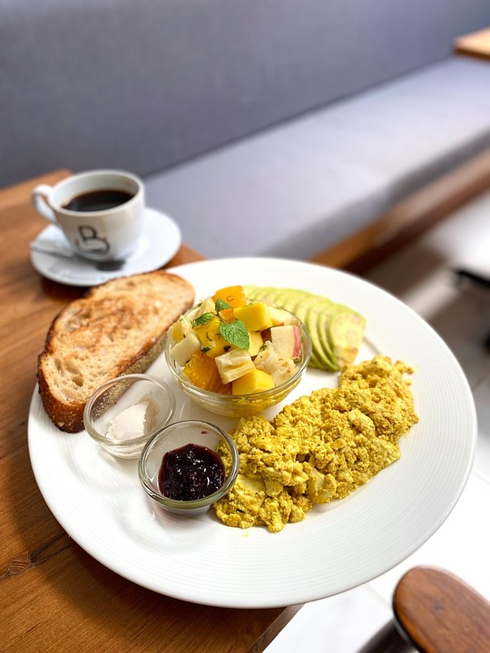

Tofu Scramble
This recipe will tell you how to make a vegetarian tofu scramble dish but with an indian twist that will leave you wanting leftovers.

Tofu Scramble
Ingredients
- 1 package extra firm tofu
- 1 medium tomato
- 1 medium onion
- 5 mushrooms
- 1 green pepper
- paneer masala
- red chili powder
- tumeric
NOTE the spices will be to taste and personal preference
Directions
- Squeeze out all water from extra firm tofu and make it into a crumble. The smaller the pieces the better.
- Marinate tofu in all spices. Add more spice than you think is necessary due to the bland nature of tofu
- Sautee veggies in pan until just before tender
- Add the spiced tofu mixture to pan and cook until tofu is golden yellow
- Add salt to taste
If you would like to know more recipes, try out my Artichoke Dip and my Chickpea Pesto salad